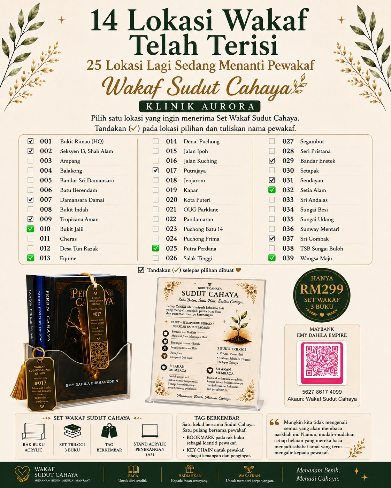

Inisiatif komuniti
Wakaf Sudut Cahaya
Memanjangkan manfaat buku ke ruang bacaan dan komuniti.
Konsep
Buku untuk manfaat bersama.
Wakaf Sudut Cahaya membawa tiga buku A5 Siri Cahaya bersama rak akrilik satu tingkat, stand A5, kad peringatan dan tag berkembar.
Hubungi untuk kolaborasi
Lokasi wakaf
Lokasi Wakaf Sudut Cahaya.
Bukit Rimau
Seksyen 13 Shah Alam
Damansara Damai
Tropicana Aman
Bukit Jalil
Equine
Putrajaya
Putra Perdana
Bandar Enstek
Sendayan
Setia Alam
Sri Gombak
Wangsa Maju
Kehadiran perpustakaan
Siri Cahaya di rak pembaca.
Lokasi Wakaf / Aurora dan angka inisiatif yang berubah mengikut masa dikekalkan sebagai maklumat yang perlu disahkan terus dengan Emy Dahlia Empire. Rekod sedia ada bertarikh 25 Ogos 2026.